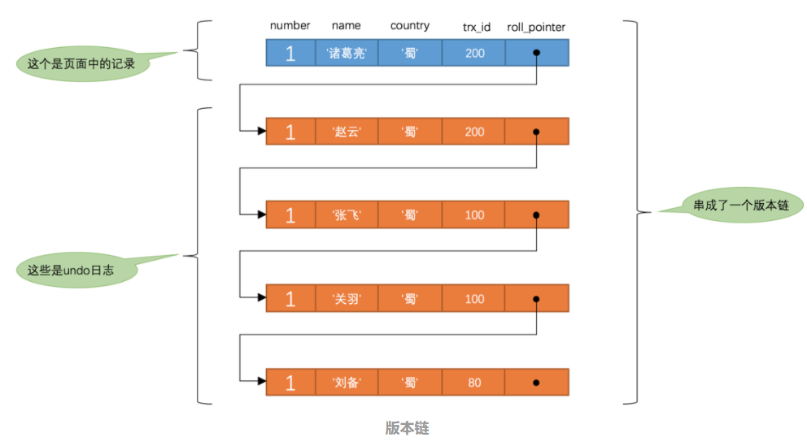
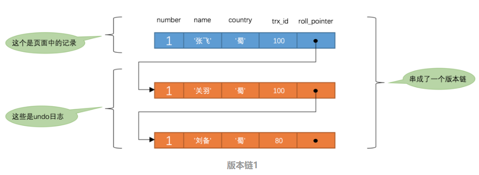
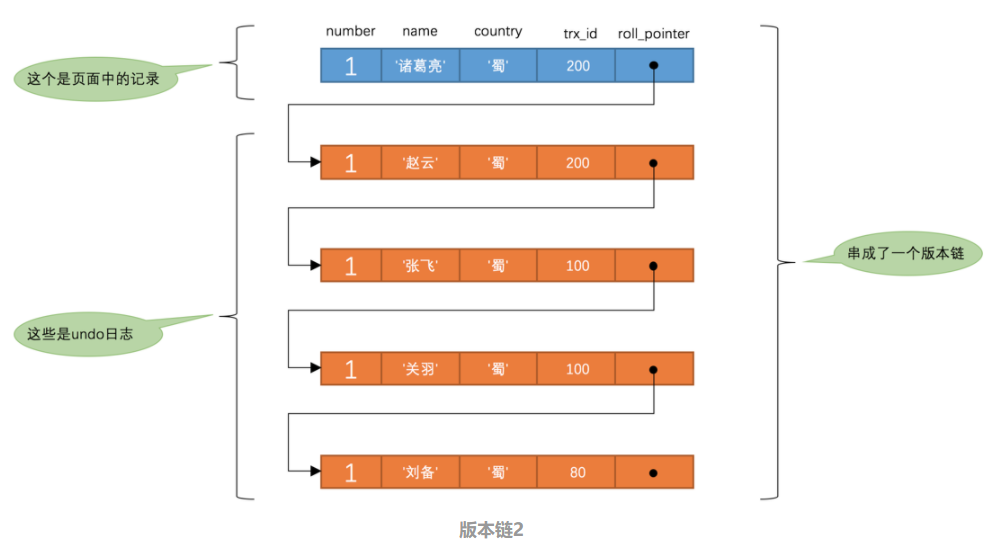

Welcome to yanliang's notes.
Mysql MVCC
多版本并发控制(Multi-Version Concurrency Control, MVCC) ，是MySQL中基于乐观锁理论实现隔离级别的方式，用于实现读已提交和可重复读取隔离级别的实现。
数据库中为了实现高并发的数据访问，对数据进行多版本处理，并通过事务的可见性来保证事务能看到自己应该看到的数据版本。多版本控制很巧妙地将稀缺资源的独占互斥转换为并发，大大提高了数据库的吞吐量及读写性能。
MVCC最大的优势：读不加锁，读写不冲突。在读多写少的系统应用中，读写不冲突是非常重要的，极大的增加了系统的并发性能
MVCC 实现
在 MVCC 并发控制中，读操作可以分为两类: 快照读（Snapshot Read）与当前读 （Current Read）。
MVCC的实现，是通过保存数据在某个时间点的快照来实现的。每个事务读到的数据项都是一个历史快照，被称为快照读，不同于当前读的是快照读读到的数据可能不是最新的，但是快照隔离能使得在整个事务看到的数据都是它启动时的数据状态。而写操作不覆盖已有数据项，而是创建一个新的版本，直至所在事务提交时才变为可见。
当前读
像select lock in share mode(共享锁), select for update ; update, insert ,delete(排他锁)这些操作都是一种当前读，为什么叫当前读？就是它读取的是记录的最新版本，读取时还要保证其他并发事务不能修改当前记录，会对读取的记录进行加锁。
快照读
读取的是记录的快照版本（有可能是历史版本），不用加锁。
像不加锁的select操作就是快照读，即不加锁的非阻塞读；快照读的前提是隔离级别不是未提交读和串行化级别，因为未提交读总是读取最新的数据行，而不是符合当前事务版本的数据行。而串行化则会对所有读取的行都加锁
MVCC 使大多数读操作都可以不用加锁，这样设计使得读数据操作很简单，性能很好，并且也能保证只会读取到符合标准的行。不足之处是每行记录都需要额外的存储空间，需要做更多的行检查工作，以及一些额外的维护工作。
具体实现
系统版本号：一个递增的数字，每开始一个新的事务，系统版本号就会自动递增。
事务版本号：事务开始时的系统版本号。
MVCC是通过在每行记录后面保存两个隐藏的列：DB_TRX_ID（trx_id）和 DB_ROLL_PTR（roll_pointer）来实现的。每次事务对某条记录进行修改时，都会把该事务的事务 ID 赋值给 trx_id 隐藏列，同时还会把该条记录的旧版本写入到 undo log 中，而这个 roll_pointer 就相当于一个指针，通过它可以找到该记录修改前的信息。
在这里需要着重说明下事务id，当我们开启一个事务，并不会马上获得事务id，哪怕我们在事务中执行select语句，也是没有事务id的（事务id为0），只有执行insert/update/delete语句才能获得事务id，这一点尤为重要。
SELECT
select时读取数据的规则为：创建版本号<=当前事务版本号
删除版本号为空或>当前事务版本号保证了至少在该事务开启之前数据没有被删除，是应该被查出来的数据。
INSERT
insert时将当前的系统版本号赋值给创建版本号字段。
UPDATE
插入一条新纪录，保存当前事务版本号为行创建版本号，同时保存当前事务版本号到原来删除的行，实际上这里的更新是通过delete和insert实现的。
DELETE
删除时将当前的系统版本号赋值给删除版本号字段，标识该行数据在那一个事务中会被删除，即使实际上在位commit时该数据没有被删除。根据select的规则后开启懂数据也不会查询到该数据。
版本链
每次对记录进行改动，都会写一条 undo log，同时每条 undo log 也都有一个 old_trx_id 属性和一个 old_roll_pointer 属性（INSERT 操作对应的 undo log 没有这些属性，因为该记录没有更早的版本）用于记录自身版本和上一个 undo log 的回滚段指针。最终这些 undo log 就连接起来形成了一个链表，这个链表称之为版本链，版本链的头节点就是当前记录的最新值。

ReadView
对于使用 READ UNCOMMITTED 隔离级别的事务来说，由于可以读到未提交事务修改过的记录，因此直接读取记录的最新版本即可。对于使用 SERIALIZABLE 隔离级别的事务来说，InnoDB 规定必须使用加锁的方式来访问记录。而对于使用 READ COMMITTED 和 REPEATABLE READ 隔离级别的事务来说，如果一个事务修改了记录但尚未提交，其他事务是不能读取记录的最新版本的。此时就需要判断版本链中的哪个版本是可以被当前事务访问的，为此 InnoDB 的设计人员提出了 ReadView 的概念。
| ReadView 组成部分 | 描述 |
|---|---|
| m_ids | 在生成 ReadView 时当前系统中活跃的读写事务（区别于只读事务，默认的事务就是读写事务）的事务 ID 列表 |
| min_trx_id | 在生成 ReadView 时当前系统中活跃的读写事务中最小的事务 ID，也就是 m_ids 中的最小值 |
| max_trx_id | 系统应该给下一个事务分配的 ID 值 |
| creator_trx_id | 生成该 ReadView 的事务 ID 值 |
只有在对记录做改动（INSERT、DELETE、UPDATE）时才会为事务分配事务 ID，否则在一个只读事务中的事务 ID 默认都是 0。
有了这个 ReadView，这样在访问某条记录时，只需要按照以下规则判断记录的某个版本是否可见：
被访问版本的 trx_id 与 ReadView 中的 creator_trx_id 相同，说明当前事务在访问自己修改过的记录，因此该版本可以被当前事务访问。
被访问版本的 trx_id 小于 ReadView 中的 min_trx_id 值，说明该版本的事务在当前事务生成 ReadView 前已经提交，所以该版本可以被当前事务访问。
被访问版本的 trx_id 在 min_trx_id 与 max_trx_id 之间，说明需要判断 trx_id 值是否在 m_ids 列表中，如果在，说明创建 ReadView 的事务还是活跃的，该版本不可以被当前事务访问；如果不在，说明创建 ReadView 时生成该版本的事务已经提交，那么该版本可以被当前事务访问。
被访问版本的 trx_id 大于或等于 ReadView 中的 max_trx_id 值，说明生成该版本的事务在当前事务生成 ReadView 之后才开启，所以该版本不可以被当前事务访问。
在 MySQL 中，READ COMMITTED 隔离级别与 REPEATABLE READ 隔离级别的一个很大的区别就是它们生成 ReadView 的时机不同。
在读提交隔离级别中，每次读取数据前都会生成一个 ReadView。
在使用 REPEATABLE READ 隔离级别的事务中，只会在第一次执行查询语句时生成一个 ReadView，之后该事务中所有的查询操作都会重复使用这个 ReadView。
为了方便说明，这里先创建一张表：
1 | CREATE TABLE hero ( |
READ COMMITTED
在读提交隔离级别中，每次读取数据前都会生成一个 ReadView。
假如现在系统中有两个事务 ID 分别为 100、200 的事务在运行。
1 | -- 事务 100 |
此时 hero 表中主键值为 1 的记录的版本链类似下面这样：

假设此时有一个 READ COMMITTED 隔离级别的事务开始执行：
1 | BEGIN; |
那么这个查询的执行过程大概是这样：
首先在执行 SELECT 语句时会生成一个 ReadView，m_ids 列表的内容就是 [100, 200]，min_trx_id 为 100，而 max_trx_id 为 201，creator_trx_id 则为 0。
然后开始从版本链中寻找可见的记录，由于最新版本的 trx_id 为 100，处于 min_trx_id 与 max_trx_id 之间，而同时 trx_id 为 100 的事务还处于活跃状态，所以该版本不能被当前事务访问。那么此时就根据 roll_pointer 跳到下一个版本中。同样的，这个版本的 trx_id 值也是 100，因此继续到下一个版本。这个版本中的 trx_id 为 80，小于 ReadView 中的 min_trx_id，因此这个版本是符合要求的，所以返回的就是该版本的信息。
接下来我们把事务 100 提交，然后在事务 200 中更新一下记录：
1 | -- 事务 100 |
此时的 hero 表中，主键值为 1 的记录的版本链类似下面这样：

然后我们再到刚才的事务中继续查找主键值为 1 的记录：
1 | BEGIN; |
这个查询的执行过程大概是这样的：
首先在执行查询时会再次生成一个 ReadView，m_ids 的值为 [200]，min_trx_id 变成了 200，而 max_trx_id 为 201，creator_trx_id 为 0。
然后从版本链中查询可见的记录，最新版本记录的 trx_id 为 200，在事务活跃列表中，因此不符合规则。以此类推，只有 trx_id 为 100、name 列的内容为“张飞”的版本符合规则。
REPEATABLE READ
与 READ COMMITTED 隔离级别不同，在使用 REPEATABLE READ 隔离级别的事务中，只会在第一次执行查询语句时生成一个 ReadView，之后该事务中所有的查询操作都会重复使用这个 ReadView。
幻读
其实在 InnoDB 中，读操作可以分为两种：快照读（Snapshot Read/Consistent Read）和当前读（Current Read/Locking Read）。
快照读就是简单的 SELECT 操作，不需要加锁，读取的是当前记录的快照。
而当前读则是特殊的读操作，读取的是记录的最新数据，包括隐含当前读逻辑的插入、更新和删除，以及一些手工添加锁的读，比如 SELECT ... FOR UPDATE、SELECT ... LOCK IN SHARE MODE，它们都属于当前读，需要加锁。
对于快照读来说，不存在幻读的问题；而对于当前读来说，会出现幻读的问题。
如果我们的项目中需要解决幻读的话也有两个办法：
- 使用串行化读的隔离级别
- MVCC+next-key locks：next-key locks由record locks(索引加锁) 和 gap locks(间隙锁，每次锁住的不光是需要使用的数据，还会锁住这些数据附近的数据)
实际上很多的项目中是不会使用到上面的两种方法的，串行化读的性能太差，而且其实幻读很多时候是我们完全可以接受的。
https://juejin.cn/post/6844903799534911496
https://blog.nekolr.com/2020/07/14/MySQL%20MVCC%20%E5%8E%9F%E7%90%86/
https://www.cnblogs.com/CodeBear/p/12710670.html